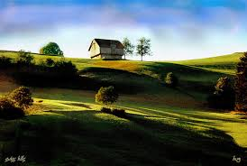

Fresh, juicy, and naturally grown apples delivered to your doorstep.
Get 20% off on your first purchase! Limited time only!
Welcome to our farm's new journey! Nestled in the scenic hills of Khadrala, Shimla, at an altitude of 10,000 feet, we’re excited to introduce our farm’s fresh, organic apples to you through our brand new online store. Growing apples has been our passion for many years, and now, with our e-store, we're bringing the taste of our farm directly to your doorstep. We’ve always believed in natural farming methods, and our apples are grown without the use of harmful chemicals or pesticides. We take great pride in handpicking each apple at its peak ripeness, ensuring you get the freshest, most flavorful apples possible. Our commitment to quality and sustainability is at the heart of everything we do, and now we’re able to share that with you more easily than ever. This new chapter in our farm’s journey is all about making our fresh apples accessible to more people while staying true to our roots. Thank you for supporting our farm and being part of this exciting new beginning. We hope you enjoy the apples as much as we enjoy growing them!
